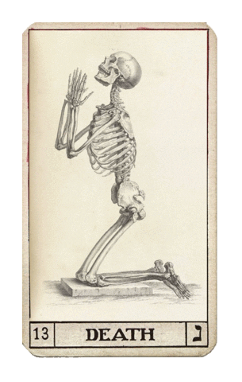
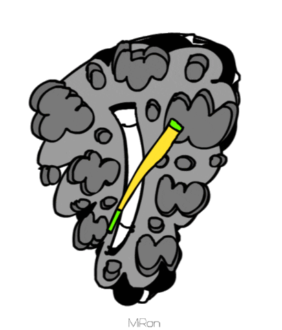

Return to previous locations:
 |
 |
| Back to the Crossroads |
Back to Sankalp's Homepage |
In a field where technical superiority is glorified beyond measures, the need for a creative mindset is often overlooked. Sure, the skills are neccesary and important but the backing provided by a well formed mind is key to maintaining balance between it all.
Following the same path, i try developing skills both from technical and creative arenas. Here is some of my work I wrote a while back.
A short story set in the cold war days moving around two soviet scientists who create artificial life. Little do they know that their creation will be bend into something much more sinister.
A satirical take on the beauty ads peddled around these days. Putting fairness on a pedestal and looking down upon darker shades of skin tones is a customary plague.
You can find many more articles (of much higher caliber than mine XD) by visiting the The Editorial Board's Wordpress handle.
A direct link to my personal blog. Haven't updated it in a while but you get the gist.
 |
|
| Back to the Crossroads |
Back to Sankalp's Homepage |


© 2021 Sankalp Mahajan.